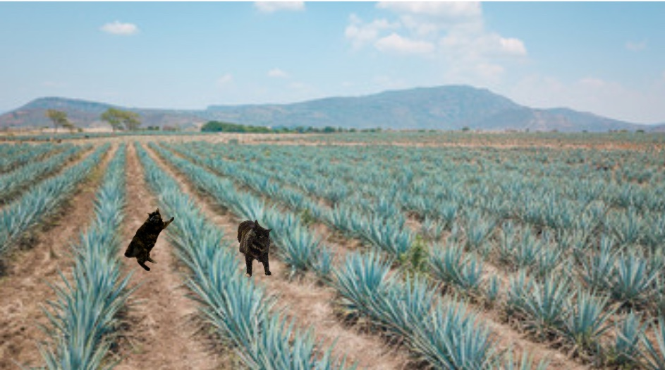

Nuestros gatitos trabajan duro en los campos de agave
Conoce a los gatitos:
Siena: Siena se crió en los campos de agave de Skokie. Es una gatita de pelo medio a largo que ama las margaritas. Su sabor favorito es la granada. Le gustan las largas caminatas en los campos de agave, el guacamole, las papas fritas y estar sentada.
Lucy: Lucy disfruta tumbarse. Le gustan las margaritas de toronja, saltar para atrapar limpiapipas y esconderse debajo de las mantas.
A Lucy le gusta hacer caca en los comedores. Se ha vuelto muy buena en eso.
¡Únete al Club Kittyrita!
- ¡Puedes convertirte en Kittyritaneer!
- Disfrutar:
- margaritas
- nueces tostadas con miel
- acurrucados
- cabezazos!